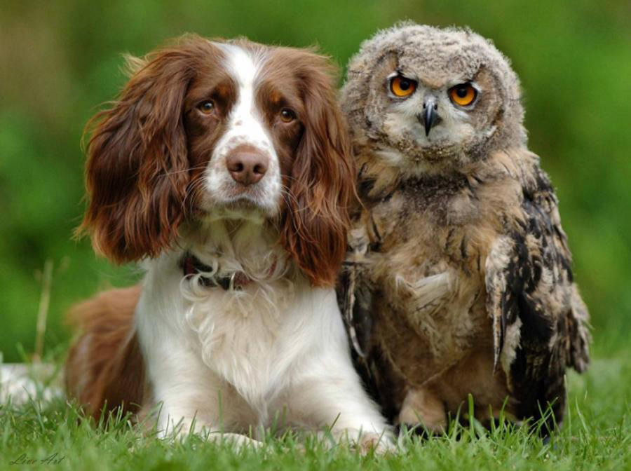

Mountains
mountain (mn. ch. — mountains) is a form of relief, an isolated sharp elevation of the terrain with By the nature of the peaks, there are peak-shaped, dome-shaped, plateform and other mountains. The peaks of seamounts can be islands. By origin, they speak of tectonodenudation mountains and volcanic ones[3].Anthropogeographically, mountains represent a very diverse and often complex set of geographical conditions. When analyzing these conditions, anthropogeography highlights the individual geographical conditions of a particular mountain landscape, and moreover in their connection with historical, economic and other conditions. For example, when choosing certain passes for communication routes, historical, economic and strategic conditions often played a greater role than natural conditions Read more....
predatory plants

The Venus flycatcher (Latin Dionaea muscipula) is a species of carnivorous plants from the monotypic genus Dionea of the Dewberry family (Droseracea). A plant of swampy areas of the east coast of the United States of America (North and South Carolina). The Venus flycatcher catches its victims (insects, arachnids) with the help of a specialized fishing apparatus formed from the marginal parts of the leaves. The closing of the trap is initiated by thin trigger (sensitive) hairs on the surface of the leaves. To slam the catching device, it is necessary to exert a mechanical effect on at least two hairs on the sheet with an interval of no more than 20 seconds. This selectivity provides protection against accidental slamming in response to falling objects that have no nutritional value (raindrops, garbage, etc.). Moreover, digestion begins at least after five times stimulation of sensitive hairs. Read more....
animals
A dog (Latin Canis familiaris, or Canis lupus familiaris) is a pet, one of the most popular (along with a cat) companion animals. The domestic dog was described as an independent biological species Canis familiaris by Linnaeus in 1758; currently, this scientific name is considered by organizations such as the American Society of Mammalogists[2][3][4]. Some sources (for example, ITIS and MSW3) recognize the dog as a subspecies of the wolf (Canis lupus familiaris)[5][6]. In Russian-language written sources, the word "dog" in the meaning of the corresponding animal has been found since at least 1475 (starting with the letter of Prince Andrey Vasilyevich the Lesser to the Kirillov Monastery)[7][8]. From a zoological point of view, a dog is a placental mammal of the carnivorous order of the Canid family. Dogs are known for their learning abilities, love of play, and social behavior. Special breeds of dogs have been bred, designed for various purposes: hunting, protection, traction of horse-drawn transport and others Read more....